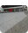
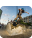
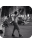
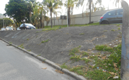

<!DOCTYPE html>
<html lang="pt-br"></html>
<head>
    <meta charset="UTF-8">
    <meta http-equiv="X-UA-Compatible" content="IE=edge">
    <meta name="viewport" content="width=device-width, initial-scale=1.0">
    <title>HZC | Picos</title>
    <link rel="preconnect" href="https://fonts.googleapis.com">
    <link rel="preconnect" href="https://fonts.gstatic.com" crossorigin>
    <link rel="stylesheet" href="https://fonts.googleapis.com/css2?family=Open+Sans:wght@400;600;700&display=swap">
    <link rel="stylesheet" href="assets/css/reset.css">
    <link rel="stylesheet" href="assets/css/estilos.css">
</head>
<body>
    <header class="cabecalho">
        <button class="cabecalho__menu" aria-label="Menu"><i></i></button>
        
        <p class="cabecalho__perfil">Bruno Lopes</p>
        <button class="cabecalho__notificacao" aria-label="Notificação"><i></i></button>
    </header>
    <nav class="menu-lateral">
        
        <a href="./index.html" class="menu-lateral__link menu-lateral__link--inicio">Inicio</a>
        <a href="./videos.html" class="menu-lateral__link menu-lateral__link--videos">Vídeos</a>
        <a href="./picos.html" class="menu-lateral__link menu-lateral__link--picos menu-lateral__link--ativo">Picos</a>
        <a href="#" class="menu-lateral__link menu-lateral__link--integrantes">Integrantes</a>
        <a href="./produtos.html" class="menu-lateral__link menu-lateral__link--camisas">Camisas</a>
        <a href="#" class="menu-lateral__link menu-lateral__link--pinturas">Pinturas</a>
    </nav>
    <main class="principal">
        <h2 class="titulo-pagina">Picos</h2>
        <article class="cartao cartao--destaque destaque-video">
            
            
        </article>
        <article class="cartao cartao--recentes videos-recentes">
            <h3 class="cartao__titulo">Favoritos</h3>
            <a href="#" class="cartao__link">Ver todos</a>
            <ul class="cartao_lista">
                <li class="cartao__item">
                    
                    <h4 class="cartao__item-titulo">Wallride da FGP</h4>
                    <p class="cartao__item-perfil">Júlia Fonseca</p>
                </li>
                <li class="cartao__item">
                    
                    <h4 class="cartao__item-titulo">Borda de Valores</h4>
                    <p class="cartao__item-perfil">Júlia Fonseca</p>
                </li>
                <li class="cartao__item">
                    
                    <h4 class="cartao__item-titulo">Wallride do Rebouças</h4>
                    <p class="cartao__item-perfil">Júlia Fonseca</p>
                </li>
                <li class="cartao__item">
                    
                    <h4 class="cartao__item-titulo">Segundo setor da Praça Mauá</h4>
                    <p class="cartao__item-perfil">Júlia Fonseca</p>
                </li>
                <li class="cartao__item">
                    
                    <h4 class="cartao__item-titulo">Borda de Valores</h4>
                    <p class="cartao__item-perfil">Júlia Fonseca</p>
                </li>
            </ul>
        </article>
        <section class="secao secao-videos">
            <h3 class="titulo-secao">Mais visitados</h3>
            <article class="cartao">
                
                <div class="cartao_conteudo">
                    <p class="cartao__perfil">Bruno Lopes</p>
                    <h3 class="cartao__titulo">GAP do Itaú da Voluntários da Pátria</h3>
                    <p class="cartao__info cartao__info--tempo">68479 visualizações</p>
                    <button class="cartao__botao cartao__botao--local" aria-label="Localização"></button>
                </div>
            </article>
            <article class="cartao">
                
                <div class="cartao_conteudo">
                    <p class="cartao__perfil">Luiza Sampaio</p>
                    <h3 class="cartao__titulo">GAP com mureta da Voluntários</h3>
                    <p class="cartao__info cartao__info--tempo">158 visualizações</p>
                    <button class="cartao__botao cartao__botao--local" aria-label="Localização"></button>
                </div>
            </article>
            <article class="cartao">
                
                <div class="cartao_conteudo">
                    <p class="cartao__perfil">André Soares</p>
                    <h3 class="cartao__titulo">Rampa da entrada do túnel Rebouças</h3>
                    <p class="cartao__info cartao__info--tempo">548 visualizações</p>
                    <button class="cartao__botao cartao__botao--local" aria-label="Localização"></button>
                </div>
            </article>
            <article class="cartao">
                
                <div class="cartao_conteudo">
                    <p class="cartao__perfil">Júlia Fonseca</p>
                    <h3 class="cartao__titulo">Wallride de pedra portuguesa da FGP</h3>
                    <p class="cartao__info cartao__info--tempo">2458 visualização</p>
                    <button class="cartao__botao cartao__botao--local" aria-label="Localização"></button>
                </div>
            </article>
        </section>
    </main>
    <script src="index.js"></script>
</body>
</html>